RotoClick Model System
Online Handbuch
Alle Anleitungen für das RotoClick System — von der Bibliotheksinstallation bis zur Kalibrierung.
Exocad Bibliotheken
Installation der RotoClick-Bibliotheken
Key Clinic
Digitalisierung des Gesichtsbogens
ARTIREGISTER
Ausrichtung der Scans in Exocad
Key Lab
Übertragung der Modelle in den Artikulator
Kalibrierung
Anpassung an andere Artikulatoren
Zubehör & Downloads
Calibrator, Extractor und weitere Dateien
RotoClick Model System
Manuale Online
Tutte le istruzioni per il sistema RotoClick — dall'installazione della libreria alla calibrazione.
Librerie Exocad
Installazione delle librerie RotoClick
Key Clinic
Digitalizzazione dell'arco facciale
ARTIREGISTER
Allineamento delle scansioni in Exocad
Key Lab
Trasferimento dei modelli nell'articolatore
Calibrazione
Adattamento ad altri articolatori
Accessori & Download
Calibratore, estrattore e altri file
RotoClick Model System
Online Manual
All instructions for the RotoClick System — from library installation to calibration.
Exocad Libraries
Installing the RotoClick libraries
Key Clinic
Digitizing the facebow registration
ARTIREGISTER
Aligning the scans in Exocad
Key Lab
Transferring models into the articulator
Calibration
Adapting to other articulators
Accessories & Downloads
Calibrator, extractor and other files
Rev.1 — 19/06/2026
Exocad Bibliotheken
Installation der RotoClick-Bibliotheken in Exocad
Bibliothek herunterladen
Laden Sie das Paket library_V6.zip herunter und entpacken Sie den Ordner library aus der ZIP-Datei.
↓ library_V6.zip herunterladenInstallationspfad öffnen
Öffnen Sie den Pfad der Exocad-Bibliothek über das Exocad-Symbol, dann das Exocad-Hauptverzeichnis und den Ordner „DentalCADApp".
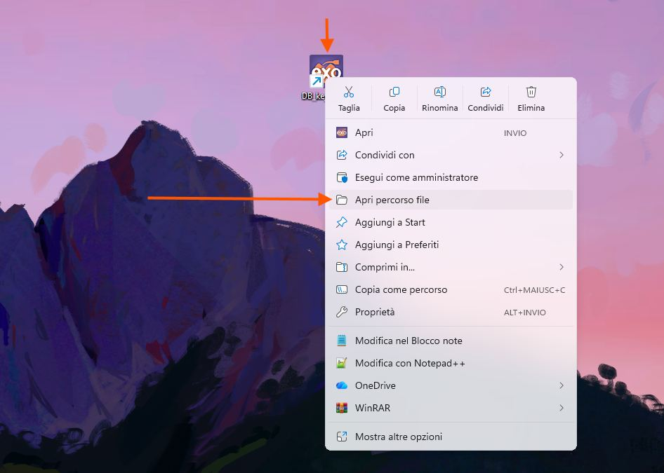
Exocad-Pfad über Rechtsklick → „Apri percorso file" öffnen
Library-Ordner kopieren
Kopieren Sie den soeben heruntergeladenen Ordner library in das DentalCADApp-Verzeichnis.

Ordner „library" per Drag & Drop oder Copy/Paste einfügen
Unterordner überprüfen
Überprüfen Sie, ob die folgenden Unterordner korrekt vorhanden sind: artiregister mit den Key-Artex-Varianten BIG / SMALL / STANDARD, sowie modelcreator/attachments mit den Ordnern rotoclick_DRAIN_HOLES und rotoclick_KEYLAB_PLUS.

Ordner „artiregister" mit den Höhenvarianten

Ordner „attachments" mit den Modell-Attachments
Sowie im Ordner modelcreator/plates die fünf Konfigurationen 1U1L, 1U2L, 2U1L, 2U2L und XL:
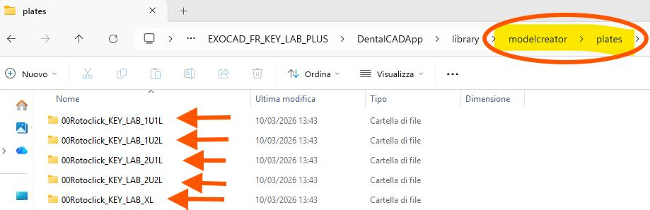
Konfigurationsordner unter modelcreator/plates
→ Weiter zur ARTIREGISTER Anleitung
Rev.1 — 19/06/2026
Librerie Exocad
Installazione delle librerie RotoClick in Exocad
Download della libreria
Scaricare il pacchetto library_V6.zip ed estrarre la cartella library dall'archivio ZIP.
↓ Scarica library_V6.zipApertura del percorso di installazione
Aprire il percorso della libreria Exocad tramite l'icona di Exocad, quindi la directory principale di Exocad e la cartella "DentalCADApp".

Aprire il percorso file tramite tasto destro → "Apri percorso file"
Copia della cartella library
Copiare la cartella library appena scaricata nella directory DentalCADApp.

Incollare la cartella "library" tramite trascinamento o copia/incolla
Verifica delle sottocartelle
Verificare che le seguenti sottocartelle siano presenti correttamente: artiregister con le varianti Key Artex BIG / SMALL / STANDARD, e modelcreator/attachments con le cartelle rotoclick_DRAIN_HOLES e rotoclick_KEYLAB_PLUS.
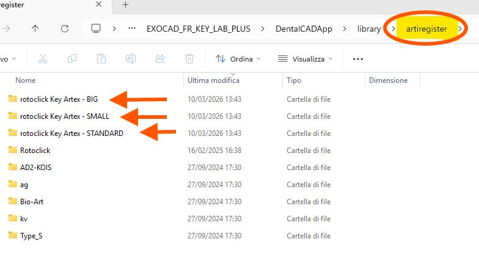
Cartella "artiregister" con le varianti di altezza
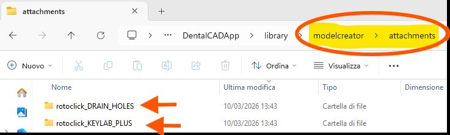
Cartella "attachments" con gli attachment del modello
E nella cartella modelcreator/plates le cinque configurazioni 1U1L, 1U2L, 2U1L, 2U2L e XL:

Cartelle di configurazione in modelcreator/plates
→ Vai alla guida ARTIREGISTER
Rev.1 — 19/06/2026
Exocad Libraries
Installing the RotoClick libraries in Exocad
Download the library
Download the package library_V6.zip and extract the library folder from the ZIP file.
↓ Download library_V6.zipOpen the installation path
Open the Exocad library path via the Exocad icon, then the Exocad main directory and the "DentalCADApp" folder.

Open the file path via right-click → "Open file location"
Copy the library folder
Copy the newly downloaded library folder into the DentalCADApp directory.
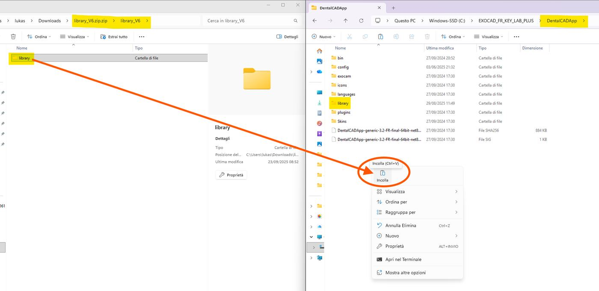
Paste the "library" folder via drag & drop or copy/paste
Verify subfolders
Verify that the following subfolders are present correctly: artiregister with the Key Artex BIG / SMALL / STANDARD variants, and modelcreator/attachments with the rotoclick_DRAIN_HOLES and rotoclick_KEYLAB_PLUS folders.

"artiregister" folder with the height variants

"attachments" folder with the model attachments
As well as the five configurations 1U1L, 1U2L, 2U1L, 2U2L and XL in the modelcreator/plates folder:

Configuration folders under modelcreator/plates
→ Continue to the ARTIREGISTER Guide
Rev.1 — 18/06/2026
Key Clinic
Protokoll zur Digitalisierung des Artex-Gesichtsbogens mittels Intraoralscanner
Einleitung
Das RotoClick Key Clinic-System ermöglicht die Digitalisierung der mit dem Artex-Gesichtsbogen erfassten Registrierung und die Übertragung der räumlichen Position des Oberkiefers in digitaler Form an das Dentallabor. Das Protokoll umfasst drei getrennte Phasen: Erfassung der digitalen intraoralen Scans, analoge Registrierung mit dem Artex-Gesichtsbogen, und Digitalisierung der Registrierung mit RotoClick Key Clinic.
Auf diese Weise können die mit dem Gesichtsbogen erfassten Informationen digital dem Labor übermittelt werden, ohne den Transferstand oder andere analoge Komponenten versenden zu müssen.
Benötigte Materialien
- Intraoral-Scanner
- Artex-Gesichtsbogen und Artex-Registriergabel
- Opakes Fixiersilikon – Futar D
- Splitex – Übertragungstisch
- RotoClick Key Clinic Marker

Intraoral-Scanner

Futar D Fixiersilikon-Set

Splitex-Übertragungstisch
Phase 1 – Erfassung der digitalen Abdrücke
Führen Sie die Intraoral-Scans des Patienten wie gewohnt durch und erfassen Sie Oberkiefer, Unterkiefer, Okklusionsregistrierung sowie gegebenenfalls zusätzliche Scans (Scanbody, präoperative Scans). Speichern Sie das Projekt nach Abschluss.
Phase 2 – Registrierung des Gesichtsbogens
Bereiten Sie die Registriergabel gemäß dem üblichen klinischen Protokoll vor. Positionieren Sie die Gabel am Oberkiefer, bringen Sie den Artex-Gesichtsbogen an und registrieren Sie die Position des Oberkiefers. Arretieren Sie das 3D-Gelenk und prüfen Sie vor dem Entfernen, dass alle Komponenten korrekt festgezogen sind.
► Video: Artex Facebow RegistrierungPhase 3 – Digitalisierung mit RotoClick Key Clinic
3.1 / 3.2 Aufnahme der Gabel im Mund (empfohlen)
Scannen Sie bei noch im Mund positionierter Gabel den vestibulären Teil der Frontzähne und die sichtbare Oberfläche der Gabel. Wichtig: Der Scan muss sowohl Zähne als auch Gabel umfassen, um einen korrekten Überlappungsbereich für die spätere digitale Ausrichtung zu schaffen.
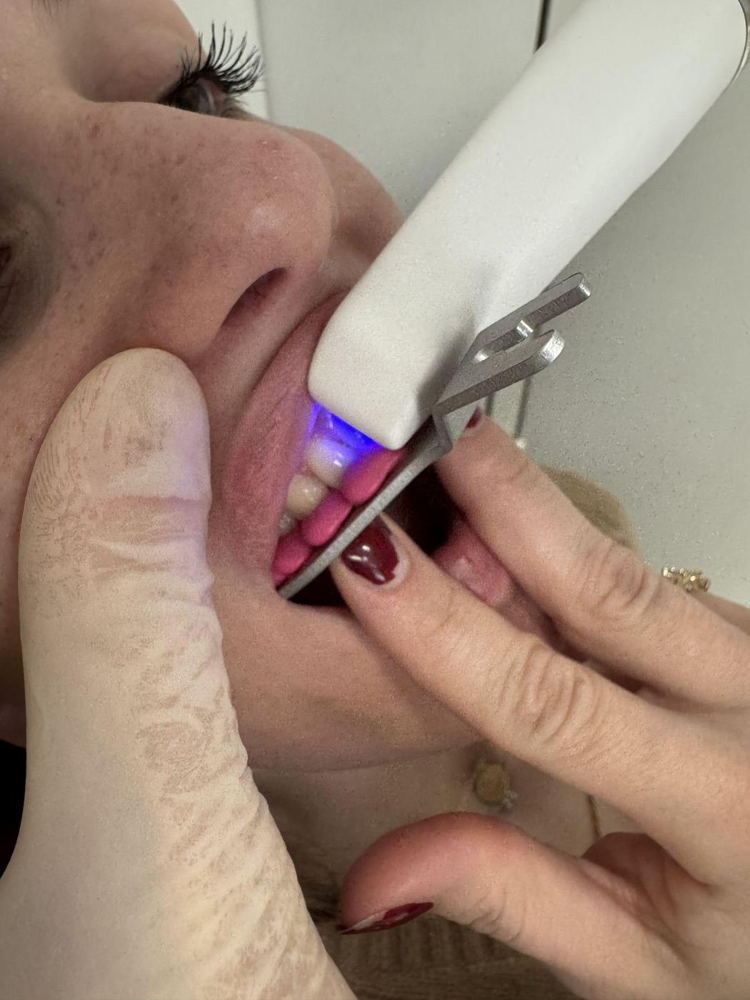
Scan der Frontzähne mit positionierter Gabel
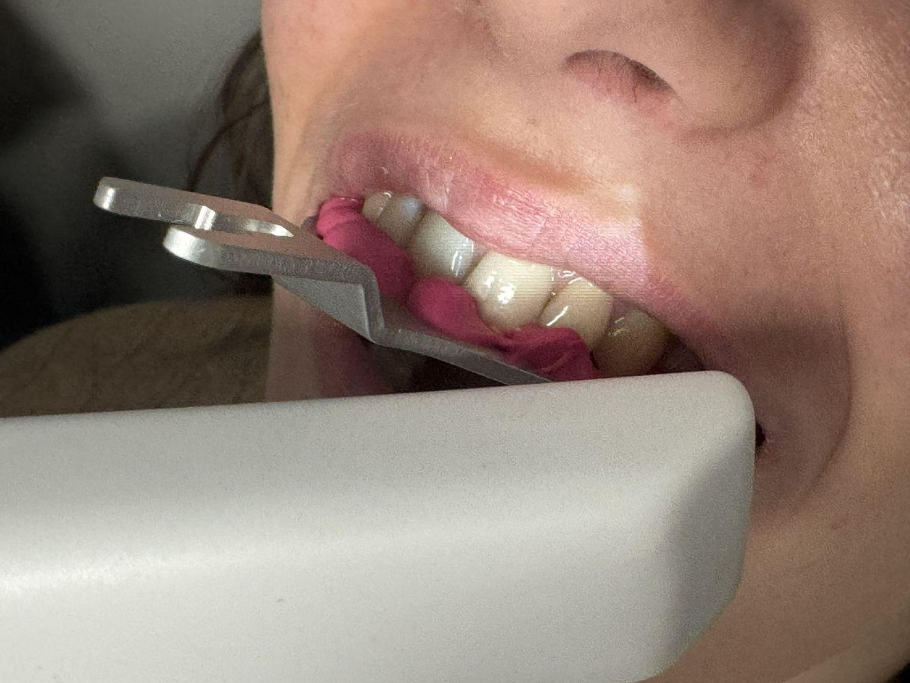
Erfassung der Gabeloberfläche
3.3 Übertragung auf Key Clinic
Entfernen Sie den Gesichtsbogen vom Patienten. Übertragen Sie den 3D-Gelenksupport auf den Splitex-Übertragungstisch und positionieren Sie den Key Clinic Marker mit der angemessenen Höhe auf der magnetischen Aufnahme — so, dass die Distanz zur Gabel so gering wie möglich ist, ohne dass sich die beiden berühren. Erstellen Sie mit Futar D mindestens 2 Verbindungen zwischen Gabel und Marker.

Digitalisiertes Ergebnis: Gabel mit Marker-Verbindung

Markervarianten: Small / Standard / Big
3.4 Aufnahme des Key Clinic
Beginnen Sie an der Oberfläche der Gabel, erfassen Sie alle Vertiefungen und setzen Sie den Scan entlang der Gabel, über die Verbindungen bis zum RotoClick Key Clinic-Gerät fort. Für eine korrekte geometrische Erkennung sollten mindestens 30 % der Key-Clinic-Oberfläche erfasst werden.

Verbindung zwischen Gabel und Key Clinic

Scan der Key-Clinic-Oberfläche
Abschlusskontrolle
- Gabel vollständig erfasst
- Verbindung zwischen Gabel und Key Clinic sichtbar und durchgängig
- Mindestens ein Drittel der Oberfläche des Key-Clinic-Markers erfasst
- Keine Trackingfehler oder fehlenden Bereiche vorhanden
- Markerhöhe (small/standard/big) in den Projektnotizen angegeben
→ Weiter zur ARTIREGISTER Anleitung
Rev.1 — 18/06/2026
Key Clinic
Protocollo per la digitalizzazione dell'arco facciale Artex tramite scanner intraorale
Introduzione
Il sistema RotoClick Key Clinic consente la digitalizzazione della registrazione acquisita con l'arco facciale Artex e il trasferimento della posizione spaziale del mascellare superiore in forma digitale al laboratorio dentale. Il protocollo comprende tre fasi separate: acquisizione delle scansioni intraorali digitali, registrazione analogica con l'arco facciale Artex, e digitalizzazione della registrazione con RotoClick Key Clinic.
In questo modo le informazioni acquisite con l'arco facciale possono essere trasmesse digitalmente al laboratorio, senza dover spedire il supporto di trasferimento o altri componenti analogici.
Materiali necessari
- Scanner intraorale
- Arco facciale Artex e forchetta di registrazione Artex
- Silicone opaco di fissaggio – Futar D
- Splitex – tavolo di trasferimento
- Marker RotoClick Key Clinic

Scanner intraorale
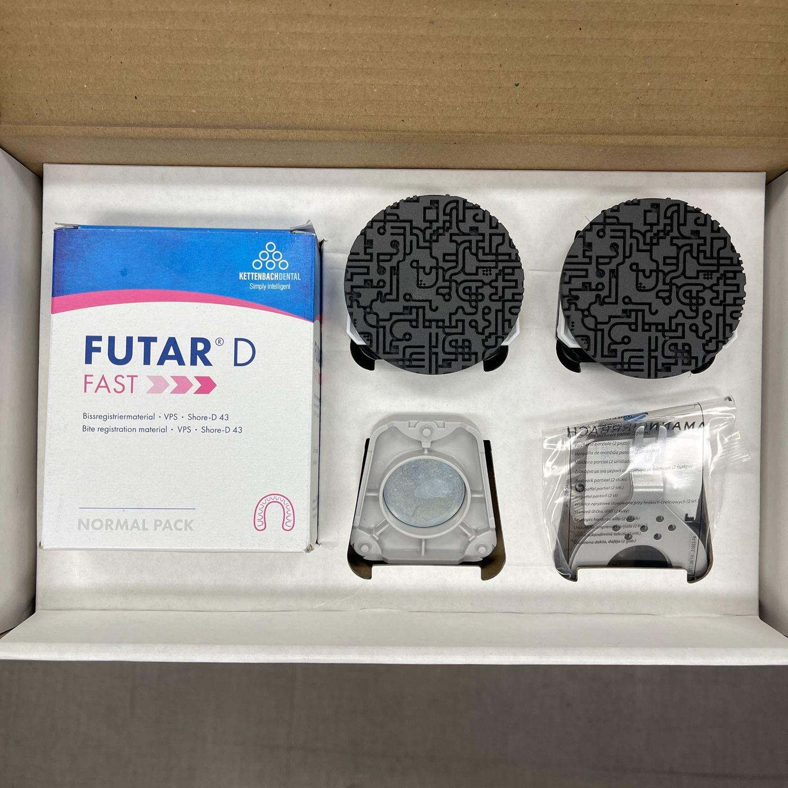
Kit silicone Futar D

Tavolo di trasferimento Splitex
Fase 1 – Acquisizione delle impronte digitali
Eseguire le scansioni intraorali del paziente come di consueto: mascellare, mandibola, registrazione occlusale e, se necessario, scansioni aggiuntive. Salvare il progetto al termine.
Fase 2 – Registrazione dell'arco facciale
Preparare la forchetta di registrazione secondo il protocollo clinico consueto. Posizionarla sul mascellare superiore, applicare l'arco facciale Artex e registrare la posizione del mascellare. Bloccare il giunto 3D e verificare che tutti i componenti siano correttamente serrati prima di rimuovere l'arco facciale.
► Video: Registrazione arco facciale ArtexFase 3 – Digitalizzazione con RotoClick Key Clinic
3.1 / 3.2 Acquisizione della forchetta in bocca (consigliato)
Con la forchetta ancora posizionata in bocca, scansionare la parte vestibolare dei denti frontali e la superficie visibile della forchetta. È fondamentale che la scansione includa sia i denti che la forchetta, per creare un'area di sovrapposizione corretta per il successivo allineamento digitale.

Scansione dei denti frontali con forchetta posizionata

Acquisizione della superficie della forchetta
3.3 Trasferimento su Key Clinic
Rimuovere l'arco facciale dal paziente. Trasferire il supporto del giunto 3D sul tavolo Splitex e posizionare il marker Key Clinic con l'altezza appropriata sull'alloggiamento magnetico — in modo che la distanza dalla forchetta sia minima senza che i due si tocchino. Creare con Futar D almeno 2 connessioni tra forchetta e marker.

Risultato digitalizzato: forchetta con connessione al marker
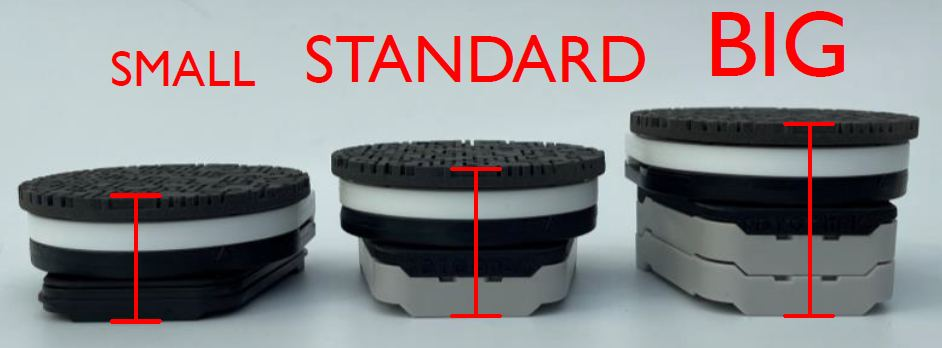
Varianti del marker: Small / Standard / Big
3.4 Scansione del Key Clinic
Iniziare dalla superficie della forchetta, acquisire tutte le cavità e continuare la scansione lungo la forchetta, attraverso le connessioni fino al dispositivo Key Clinic. Per un corretto riconoscimento geometrico devono essere acquisiti almeno il 30 % della superficie del Key Clinic.
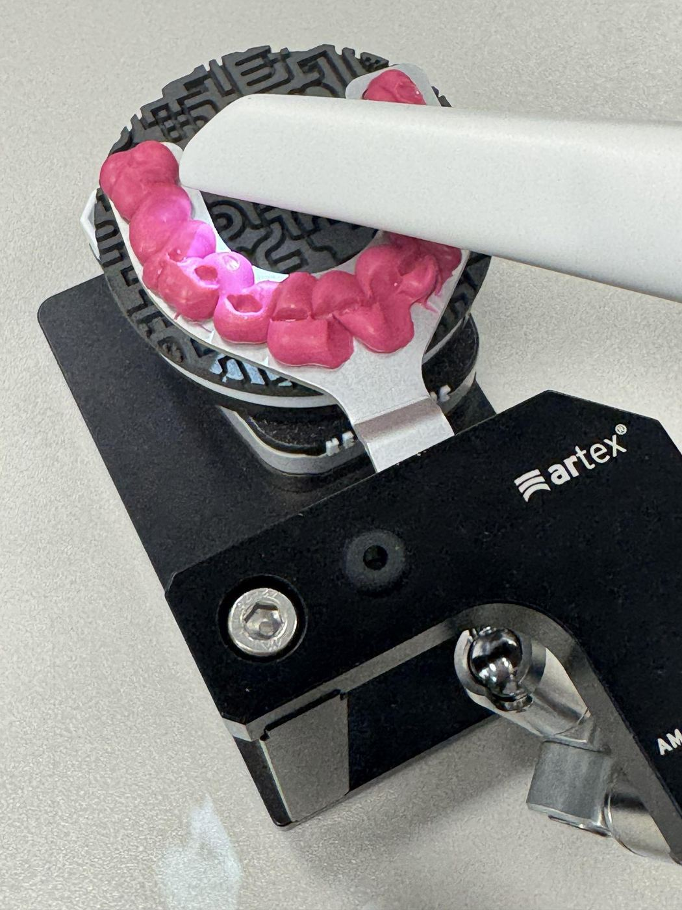
Connessione tra forchetta e Key Clinic

Scansione della superficie Key Clinic
Controllo finale
- Forchetta acquisita completamente
- Connessione tra forchetta e Key Clinic visibile e continua
- Almeno un terzo della superficie del marker Key Clinic acquisita
- Nessun errore di tracking o aree mancanti
- Altezza del marker (small/standard/big) indicata nelle note del progetto
→ Vai alla guida ARTIREGISTER
Rev.1 — 18/06/2026
Key Clinic
Protocol for digitizing the Artex facebow using an intraoral scanner
Introduction
The RotoClick Key Clinic system enables digitization of the registration captured with the Artex facebow and the transfer of the spatial position of the maxilla in digital form to the dental laboratory. The protocol comprises three separate phases: acquisition of digital intraoral scans, analog registration with the Artex facebow, and digitization of the registration with RotoClick Key Clinic.
This way, the information captured with the facebow can be transmitted digitally to the laboratory, without having to ship the transfer stand or other analog components.
Required materials
- Intraoral scanner
- Artex facebow and Artex registration fork
- Opaque fixation silicone – Futar D
- Splitex – transfer table
- RotoClick Key Clinic marker
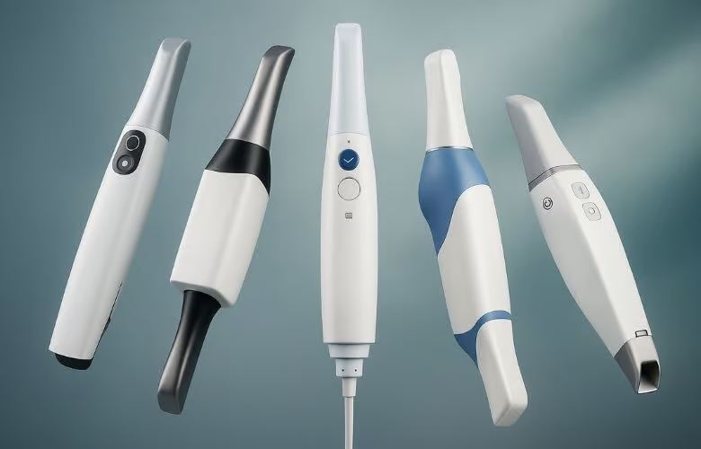
Intraoral scanner

Futar D fixation silicone set
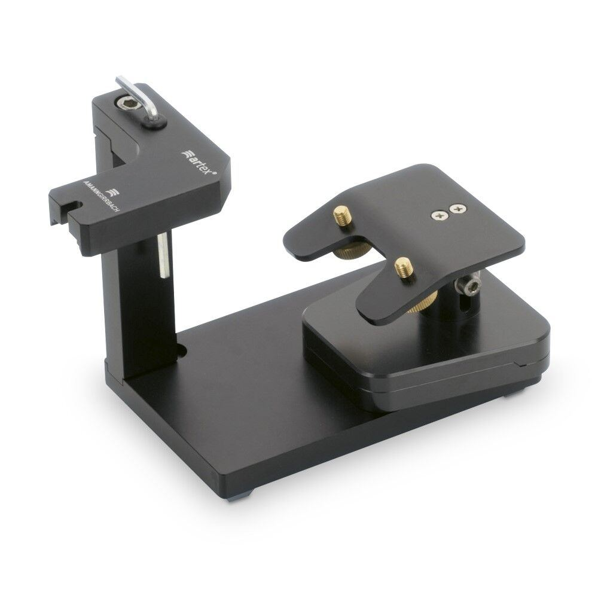
Splitex transfer table
Phase 1 – Acquisition of digital impressions
Perform the patient's intraoral scans as usual and capture the maxilla, mandible, occlusal registration, and any additional scans required for the clinical case (scanbody, preoperative scans). Save the project once the intraoral acquisition is complete.
Phase 2 – Facebow registration
Prepare the registration fork according to the usual clinical protocol. Position the fork on the maxilla and check the stability of the registration. Attach the Artex facebow according to the manufacturer's instructions and register the position of the maxilla. Lock the 3D joint and check that all components are correctly tightened before removing the facebow.
► Video: Artex Facebow RegistrationPhase 3 – Digitization with RotoClick Key Clinic
3.1 / 3.2 Capturing the fork in the mouth (recommended)
With the fork still positioned in the mouth, scan the vestibular surface of the front teeth and the visible surface of the fork. It's important that the scan includes both the teeth and the fork, to create a correct overlap area for the later digital alignment.

Scanning the front teeth with the fork in position

Capturing the fork surface
3.3 Transfer to Key Clinic
Remove the facebow from the patient. Transfer the 3D joint support to the Splitex transfer table and position the Key Clinic marker with the appropriate height on the magnetic mount — so that the distance to the fork is as small as possible without the two touching. Create at least 2 connections between fork and marker using Futar D.
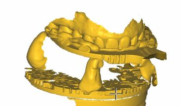
Digitized result: fork with marker connection

Marker variants: Small / Standard / Big
3.4 Scanning the Key Clinic
Start at the surface of the fork, capture all recesses and continue the scan along the fork, across the connections, to the RotoClick Key Clinic device. For correct geometric recognition, at least 30 % of the Key Clinic surface should be captured.

Connection between fork and Key Clinic
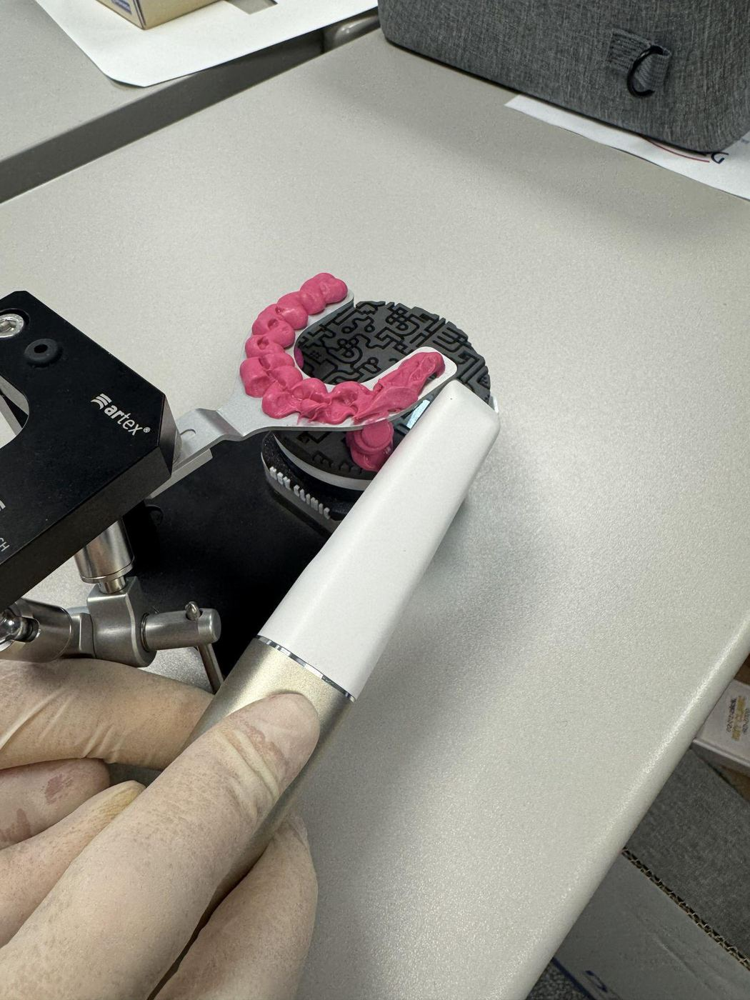
Scanning the Key Clinic surface
Final check
- Fork fully captured
- Connection between fork and Key Clinic visible and continuous
- At least one third of the Key Clinic marker surface captured
- No tracking errors or missing areas present
- Marker height (small/standard/big) noted in the project notes
→ Continue to the ARTIREGISTER Guide
Rev.1 — 18/06/2026
ARTIREGISTER
Ausrichtung der Key Clinic Registrierung in Exocad
Einführung
Dieses Verfahren beschreibt die korrekte Ausrichtung der mit dem RotoClick Key Clinic System erfassten Registrierung innerhalb von Exocad. Ziel ist die Übertragung der mit dem Artex-Gesichtsbogen registrierten und mittels Key Clinic digitalisierten räumlichen Position des Oberkiefers.
Fallanlage
Die Verwendung des Artikulators Artex CR in der Exocad-Datenbank angeben:
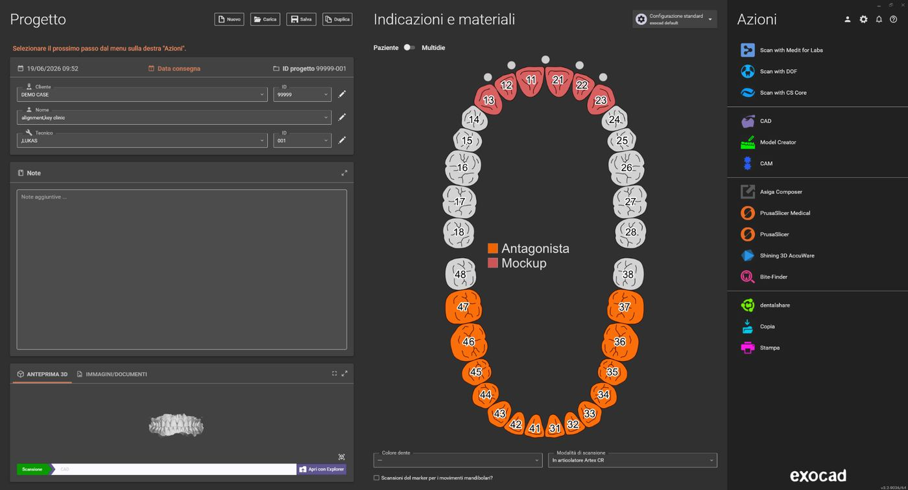
Exocad-Fallanlage mit Zahnschema

Auswahl „In articolatore Artex CR" als Scanmodus
Erforderliche Dateien
Bevor Sie beginnen, stellen Sie sicher, dass Ihnen folgende Daten vorliegen:
- Oberkiefer (ggf. mit Scanbodies oder präoperativen Scans)
- Unterkiefer (ggf. mit zusätzlichen Daten)
- Okklusionsregistrat, sofern die Kiefer nicht bereits ausgerichtet sind
- STL-Datei mit dem Scan des RotoClick Key Clinic Systems

Erforderliche Dateien im Exocad-Projektordner
Import der Gabel + Marker-Scans
Werkzeuge → Mesh hinzufügen/entfernen.
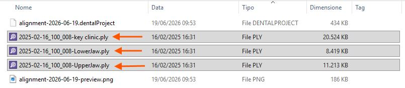
Werkzeuge-Menü mit „Aggiungi/rimuovi mesh"
Importieren Sie die Datei der Registriergabel + des Markers als „Generisches Visualisierung-Mesh". Laden Sie auf gleiche Weise auch die Marker-Bibliothek aus dem Ordner „artiregister" als Visualisierungsobjekt.
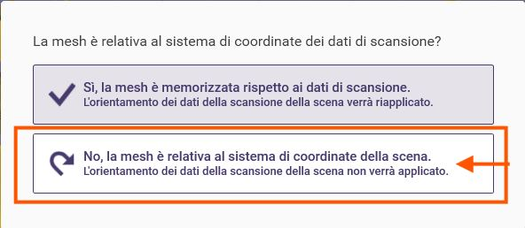
Auswahl-Dialog Mesh-Typ

Import der Gabel+Marker-Scans

Auswahl des korrekten Koordinatensystems beim Import
Import des Markers

Darstellungsoptionen: „Solo ombreggiatura piatta" auswählen
Nun verwenden wir die Marker-Bibliothek als Referenz für den Artex-Artikulator. Die anderen Objekte (Oberkiefer, Unterkiefer sowie der Gabel+Marker-Scan) befinden sich noch in allgemeinen Positionen im Raum. Im nächsten Schritt werden sie korrekt an den Koordinaten des virtuellen Artikulators ausgerichtet.
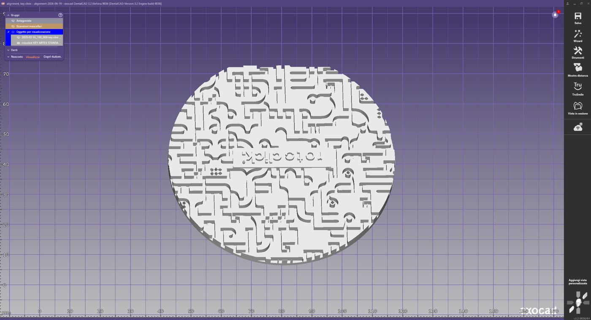
Marker-Bibliothek als flache Schattierung

Marker-Referenz im virtuellen Artikulator
Vorausrichtung
Exocad zeigt nun die zum Fall gehörenden Intraoralscans, den Gabel+Marker-Scan, sowie die Key Clinic Marker-Bibliothek an. Vor dem Matching den Gabel+Marker-Scan manuell in eine für das Matching geeignete Perspektive verschieben:

Alle geladenen Objekte in der Szene

Manuelle Vorausrichtung des Gabel+Marker-Scans
Auswahl der Referenzpunkte
Identifizieren Sie drei eindeutig erkennbare Punkte des Markers, die in beiden Scans vorhanden sind.
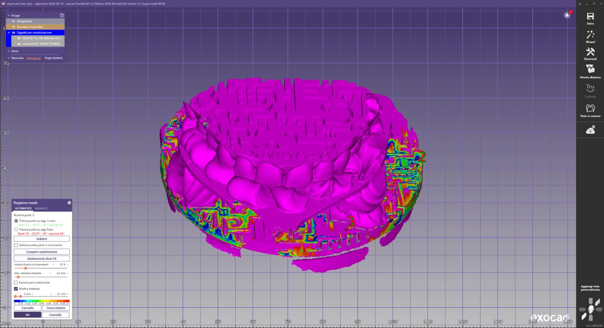
Auswahl von drei Referenzpunkten auf dem Marker
Automatische Registrierung
Exocad berechnet automatisch die bestmögliche anfängliche Überlagerung der beiden Meshes. Wählen Sie nach der ersten Registrierung die Best-Fit-Anpassung — die Software optimiert anschließend die Überlagerung der gemeinsamen Oberflächen weiter.

Ergebnis der automatischen Best-Fit-Registrierung
Kontrolle der Ausrichtung
Überprüfen Sie die farbcodierte Überlagerungskarte. Eine korrekte Ausrichtung zeigt überwiegend Farben mit minimalen Abweichungen und keine offensichtlichen Fehlstellungen. Drehen Sie das Modell und kontrollieren Sie aus verschiedenen Blickwinkeln. Klicken Sie auf OK zur Bestätigung.

Farbcodierte Distanzkarte zur Kontrolle der Ausrichtung
Verschieben der Intraoralscans
Im letzten Schritt werden alle Intraoralscans in die Position des ausgerichteten Oberkiefers gebracht. Öffnen Sie erneut Mesh registrieren und verwenden Sie die Funktion „Weitere bewegliche Teile auswählen", um alle Scans als einen einzigen Block zu verschieben.

Funktion „Weitere bewegliche Teile auswählen" aktivieren
Wählen Sie 3 gemeinsame Punkte auf den Scans des Oberkiefers aus und führen Sie anschließend Registrierung und Best-Fit-Anpassung durch.

Registrierung der Intraoralscans am ausgerichteten Oberkiefer
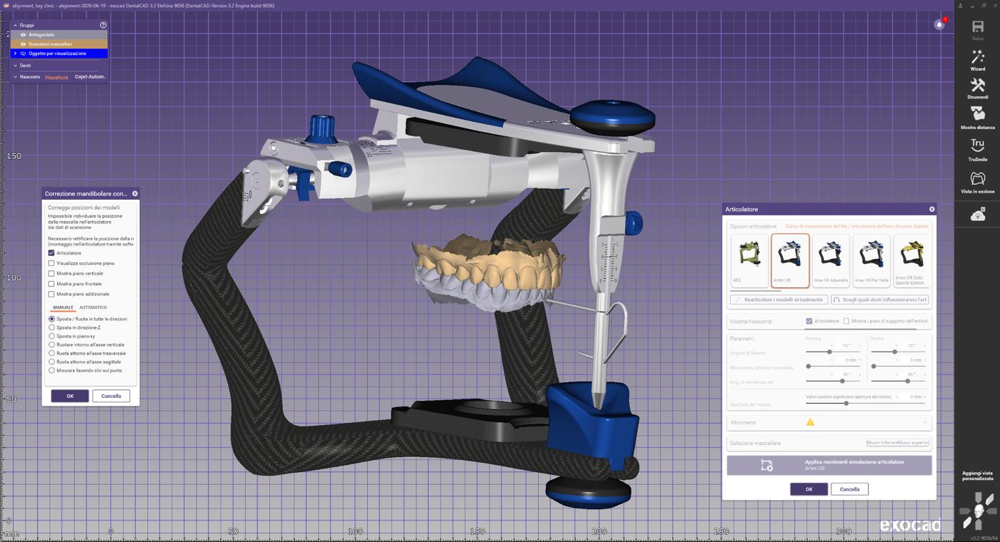
Virtueller Artikulator zur finalen Positionskontrolle
Abschlusskontrolle
- Daten vollständig und korrekt ausgerichtet
- Keine doppelten Meshes vorhanden
- Registrierung aus allen Ansichten stabil
- Distanzkarte zeigt minimale Abweichungen in den Überlappungsbereichen
- Virtueller Artikulator gestartet und endgültige Position überprüft
Fehlerbehebung
Fehlerhafte Registrierung
Mögliche Ursachen: Falsch ausgewählte Referenzpunkte, unvollständiger Scan, unzureichende gemeinsame Scanbereiche. Lösung: Vorausrichtung erneut durchführen, weiter voneinander entfernte Referenzpunkte wählen, Qualität der Scans prüfen.
Unzureichendes Best-Fit-Ergebnis
Mögliche Ursachen: Scanartefakte, Registriergabel nur teilweise erfasst, Tracking-Verlust, Scandaten nicht bereinigt. Lösung: Registrierung erneut durchführen, Meshes überprüfen, Scandaten zuschneiden, Funktion „Bereiche ausschließen" verwenden oder Scan neu aufnehmen.
→ Weiter zur Key Lab Anleitung
Rev.1 — 18/06/2026
ARTIREGISTER
Allineamento della registrazione Key Clinic in Exocad
Introduzione
Questa procedura descrive il corretto allineamento della registrazione acquisita con il sistema RotoClick Key Clinic all'interno di Exocad. L'obiettivo è il trasferimento della posizione spaziale del mascellare superiore, registrata con l'arco facciale Artex e digitalizzata tramite Key Clinic.
Creazione del caso
Indicare l'utilizzo dell'articolatore Artex CR nel database Exocad:

Creazione del caso Exocad con schema dentale

Selezione "In articolatore Artex CR" come modalità di scansione
File necessari
Prima di iniziare, verificare di disporre dei seguenti dati:
- Mascellare (eventualmente con scanbody o scansioni preoperatorie)
- Mandibola (eventualmente con dati aggiuntivi)
- Registrazione occlusale, se mascellare e mandibola non sono già allineati
- File STL con la scansione del sistema RotoClick Key Clinic

File necessari nella cartella del progetto Exocad
Import delle scansioni forchetta + marker
Strumenti → Aggiungi/rimuovi mesh.

Menu Strumenti con "Aggiungi/rimuovi mesh"
Importare il file della forchetta di registrazione + marker come "Mesh di visualizzazione generica". Caricare allo stesso modo anche la libreria marker dalla cartella "artiregister".

Finestra di selezione del tipo di mesh

Import delle scansioni forchetta+marker
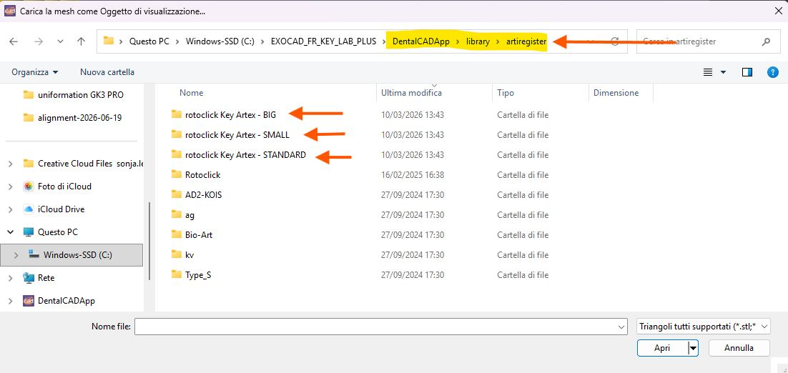
Selezione del corretto sistema di coordinate durante l’import
Import del marker
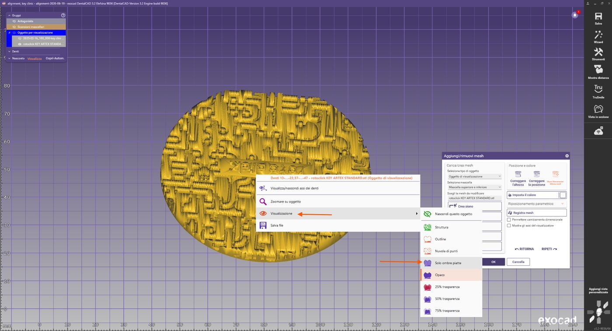
Opzioni di visualizzazione: selezionare "Solo ombreggiatura piatta"
Ora utilizziamo la libreria marker come riferimento per l'articolatore Artex. Gli altri oggetti (mascellare, mandibola e la scansione forchetta+marker) si trovano ancora in posizioni generiche nello spazio. Nel passaggio successivo verranno allineati correttamente alle coordinate dell'articolatore virtuale.

Libreria marker in ombreggiatura piatta
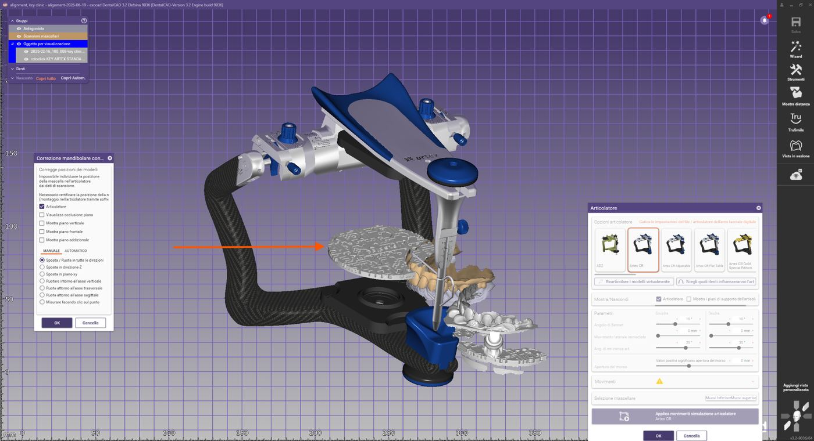
Riferimento marker nell’articolatore virtuale
Pre-allineamento
Exocad mostra ora le scansioni intraorali del caso, la scansione forchetta+marker e la libreria marker Key Clinic. Prima del matching, spostare manualmente la scansione forchetta+marker in una prospettiva adatta:
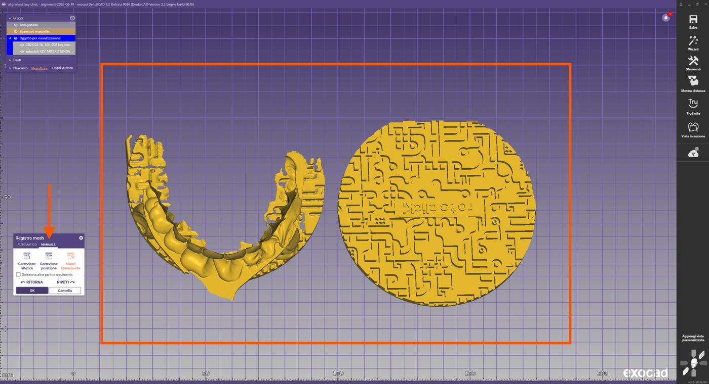
Tutti gli oggetti caricati nella scena
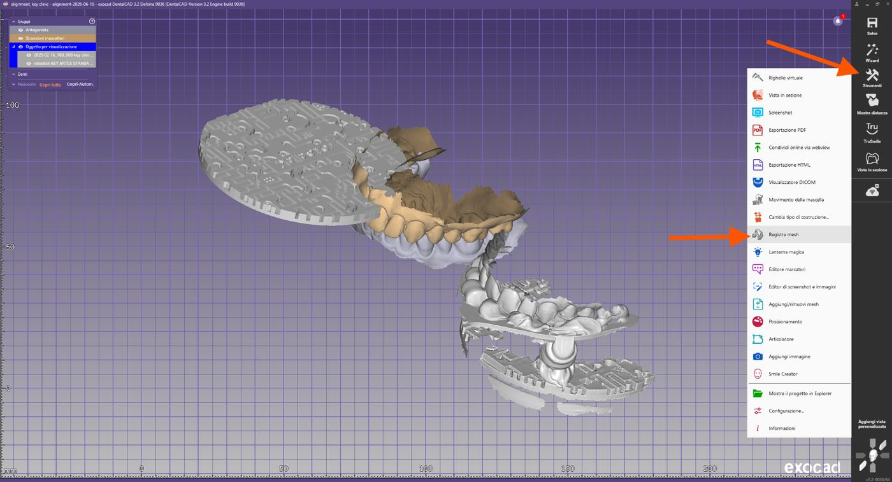
Pre-allineamento manuale della scansione forchetta+marker
Selezione dei punti di riferimento
Identificare tre punti chiaramente riconoscibili del marker presenti in entrambe le scansioni.

Selezione di tre punti di riferimento sul marker
Registrazione automatica
Exocad calcola automaticamente la sovrapposizione iniziale ottimale. Dopo la prima registrazione, selezionare l'adattamento Best-Fit — il software ottimizza ulteriormente la sovrapposizione delle superfici comuni.

Risultato della registrazione automatica Best-Fit
Controllo dell’allineamento
Verificare la mappa di sovrapposizione colorata. Un allineamento corretto mostra principalmente colori con deviazioni minime e nessun disallineamento evidente. Ruotare il modello e controllare da diverse angolazioni. Cliccare su OK per confermare.
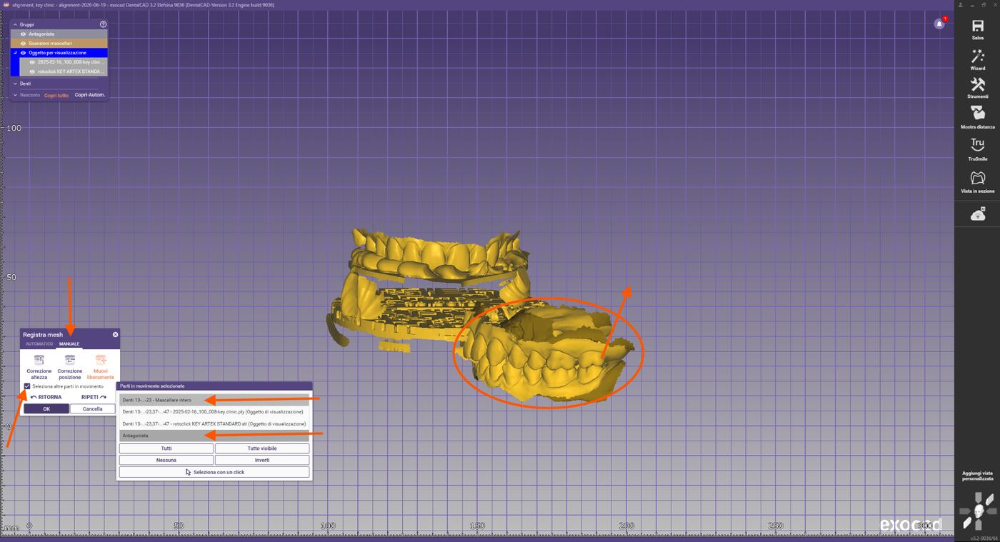
Mappa delle distanze colorata per il controllo dell’allineamento
Spostamento delle scansioni intraorali
Nell'ultimo passaggio, tutte le scansioni intraorali vengono portate nella posizione del mascellare appena allineato. Riaprire Registra mesh e usare "Seleziona altre parti in movimento" per spostare tutte le scansioni come un unico blocco.
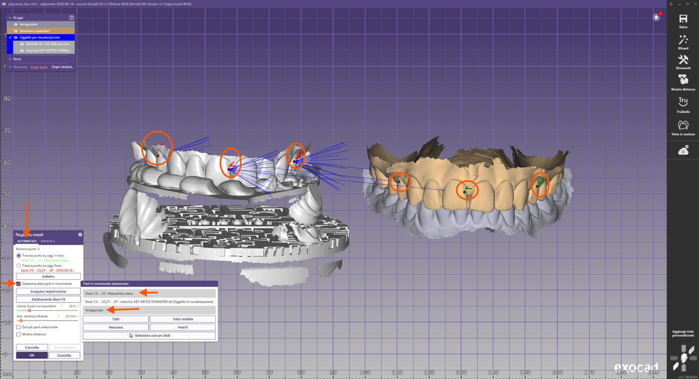
Attivazione di "Seleziona altre parti in movimento"
Selezionare 3 punti comuni sulle scansioni del mascellare superiore ed eseguire registrazione e adattamento Best-Fit.

Registrazione delle scansioni intraorali sul mascellare allineato

Articolatore virtuale per il controllo finale della posizione
Controllo finale
- Dati completamente e correttamente allineati
- Nessuna mesh duplicata presente
- Registrazione stabile da tutte le angolazioni
- Mappa delle distanze mostra deviazioni minime nelle aree di sovrapposizione
- Articolatore virtuale avviato e posizione finale verificata
Risoluzione dei problemi
Registrazione errata
Possibili cause: punti di riferimento selezionati in modo errato, scansione incompleta della forchetta, aree comuni di scansione insufficienti. Soluzione: ripetere il pre-allineamento, scegliere punti di riferimento più distanti tra loro, verificare la qualità delle scansioni.
Risultato Best-Fit insufficiente
Possibili cause: artefatti di scansione, forchetta acquisita solo parzialmente, perdita di tracking, dati di scansione non puliti. Soluzione: ripetere la registrazione, verificare le mesh originali, ritagliare e pulire i dati di scansione, usare la funzione "Escludi aree" o ripetere la scansione.
→ Vai alla guida Key Lab
Rev.1 — 18/06/2026
ARTIREGISTER
Aligning the Key Clinic registration in Exocad
Introduction
This procedure describes the correct alignment of the registration captured with the RotoClick Key Clinic system within Exocad. The goal is to transfer the spatial position of the maxilla, registered with the Artex facebow and digitized via Key Clinic.
Case setup
Specify the use of the Artex CR articulator in the Exocad database:

Exocad case setup with tooth chart
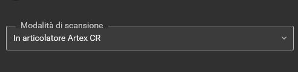
Selecting "In articulator Artex CR" as scan mode
Required files
Before starting, make sure you have the following data available:
- Maxilla (possibly with scanbodies or preoperative scans)
- Mandible (possibly with additional data)
- Occlusal registration, if maxilla and mandible are not already aligned to each other
- STL file with the scan of the RotoClick Key Clinic system
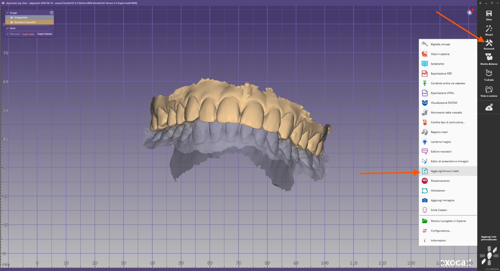
Required files in the Exocad project folder
Importing the fork + marker scans
Tools → Add/remove mesh.

Tools menu with "Add/remove mesh"
Import the registration fork + marker file as "Generic visualization mesh". Likewise, load the marker library from the "artiregister" folder as a visualization object.

Mesh type selection dialog
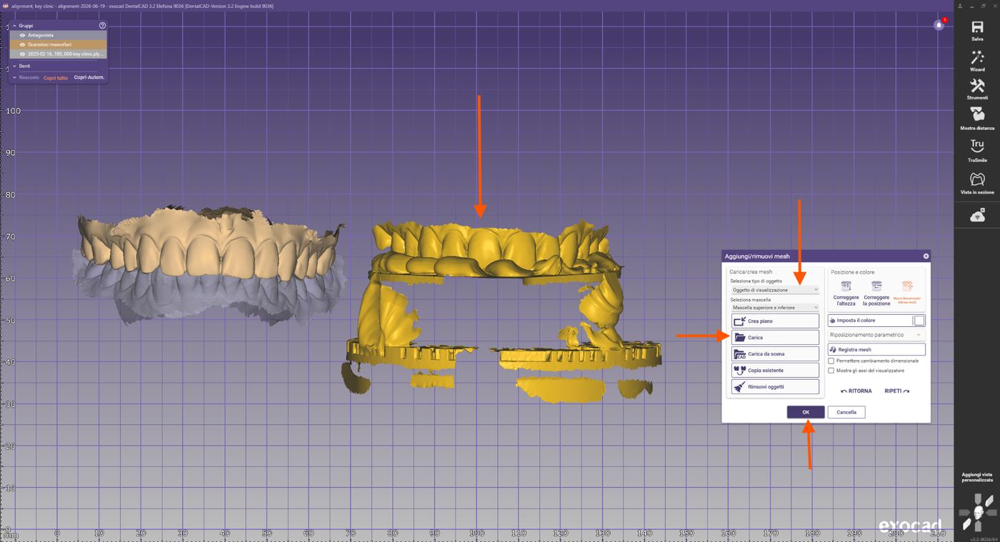
Importing the fork+marker scans

Selecting the correct coordinate system during import
Importing the marker

Display options: select "Flat shading only"
We now use the marker library as a reference for the Artex articulator. The other objects (maxilla, mandible, and the fork+marker scan) are still in generic positions in space. In the next step, they will be correctly aligned to the coordinates of the virtual articulator.

Marker library in flat shading

Marker reference in the virtual articulator
Pre-alignment
Exocad now displays the intraoral scans belonging to the case, the fork+marker scan, and the Key Clinic marker library. Before matching, manually move the fork+marker scan into a perspective suitable for matching:

All loaded objects in the scene

Manual pre-alignment of the fork+marker scan
Selecting reference points
Identify three clearly recognizable points on the marker that are present in both scans.

Selecting three reference points on the marker
Automatic registration
Exocad automatically calculates the best possible initial overlap of the two meshes. After the first registration, select Best-Fit adjustment — the software then further optimizes the overlap of the shared surfaces.
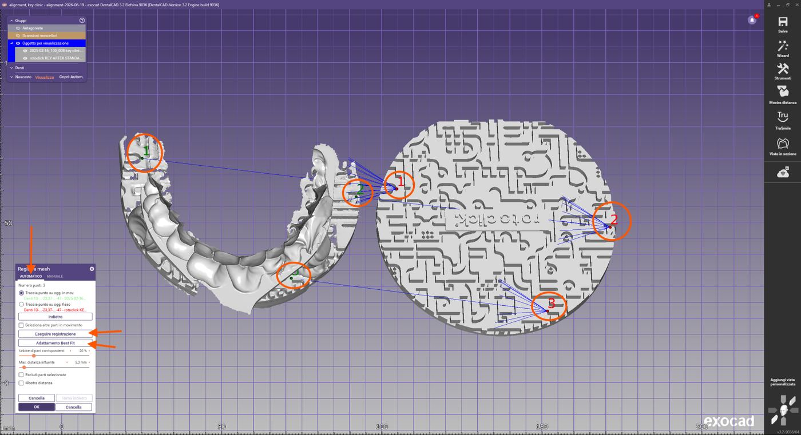
Result of the automatic Best-Fit registration
Checking the alignment
Check the color-coded overlap map. A correct alignment is characterized by a predominant proportion of colors showing only minimal deviations and the absence of any obvious misalignment. Rotate the model and check the result from different angles. Click OK to confirm the registration.

Color-coded distance map for checking the alignment
Moving the intraoral scans
In the final step, all intraoral scans are brought into the position of the maxilla just aligned. Reopen Register mesh and use the "Select further moving parts" function to move all scans as a single block.

Activating "Select further moving parts"
Select 3 common points on the maxillary scans and then carry out registration and Best-Fit adjustment.
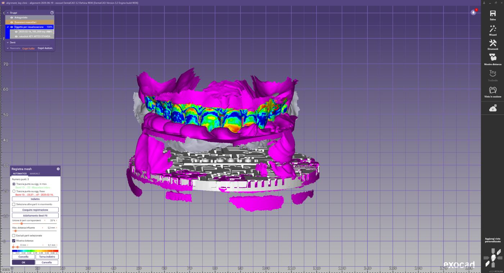
Registration of the intraoral scans on the aligned maxilla

Virtual articulator for final position check
Final check
- Data fully and correctly aligned
- No duplicate meshes present
- Registration stable from all views
- Distance map shows minimal deviations in the overlap areas
- Virtual articulator started and final position checked
Troubleshooting
Faulty registration
Possible causes: incorrectly selected reference points, incomplete scan of the registration fork, insufficient common scan areas. Solution: redo the pre-alignment, choose reference points further apart, check the quality of the scans.
Insufficient Best-Fit result
Possible causes: scan artifacts, registration fork only partially captured, tracking loss during acquisition, scan data not sufficiently cleaned. Solution: redo the registration, check the original meshes, trim and clean the scan data, use the "Exclude areas" function, or rescan if necessary.
→ Continue to the Key Lab Guide
Rev.1 — 18/06/2026
Key Lab
Übertragung digitaler Modelle in den physischen Artikulator
Einleitung
RotoClick Key Lab ist ein System zur präzisen Übertragung digitaler CAD-Modelle in den physischen Artikulator, wobei die zuvor im virtuellen Artikulator definierte räumliche Position des Oberkiefers erhalten bleibt.
Das in den digitalen Exocad-Workflow integrierte System ermöglicht die Erstellung von 3D-Druckmodellen mit speziellen Schnittstellen für eine schnelle, präzise und reproduzierbare Montage im physischen Artikulator. Dank der Übereinstimmung zwischen digitaler Umgebung und analogem Artikulator kann der Techniker die Arbeit sowohl virtuell als auch mechanisch überprüfen.
Phase 1 — Modellausrichtung im Model Creator
Innerhalb des Model Creator wählen Sie das für den jeweiligen Fall am besten geeignete RotoClick Key Lab-Modell aus. Die verschiedenen Konfigurationen bestimmen sowohl die verfügbare vertikale Höhe zwischen den Kieferbögen als auch den Typ der Platten für die anschließende Montage im Artikulator.

Modellauswahl im Model Creator
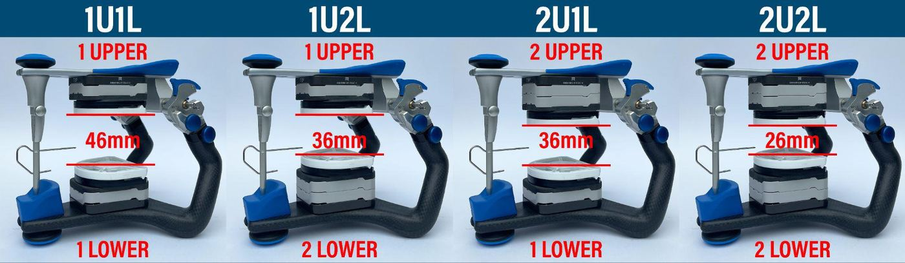
Konfigurationsübersicht: 1U1L (46mm), 1U2L (36mm), 2U1L (36mm), 2U2L (26mm)
Die Auswahl muss unter Berücksichtigung folgender Faktoren erfolgen:
- Gesamthöhe der Scandaten
- Vorhandensein von Implantatanalogen
- Art des herzustellenden Modells
- Erforderlicher Platz für die Montage im Artikulator

Modellausrichtung mit Höhenanzeige für Maxilla und Mandibula
Die XL-Konfiguration (60 mm) eignet sich besonders für komplexe Implantatfälle, bei denen Implantatanaloge in beiden Kieferbögen erforderlich sind oder zusätzlicher vertikaler Platz für prothetische Komponenten benötigt wird.

Modell im Artikulator montiert

XL-Konfiguration von vorne

Modelltyp-Auswahlmenü im RotoClick Model Creator
Modelltyp
Die verfügbaren Optionen ermöglichen die Erstellung von Standardmodellen, Modellen mit herausnehmbaren Stümpfen, Modellen mit Implantatanalogen, Modellen mit Drainageöffnungen für den Direktdruck, sowie Modellen mit Kontrollfenstern zur Überprüfung der korrekten Positionierung der Implantatanaloge.
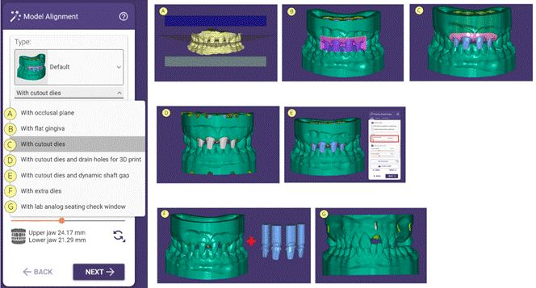
Übersicht der Modelltyp-Optionen A–G
Positionierung im Artikulator
Um die zuvor im virtuellen Artikulator festgelegte räumliche Position beizubehalten, aktivieren Sie die Option „Ausrichtung auf die ursprünglichen Scandaten wiederherstellen". Diese Funktion übernimmt die im virtuellen Artikulator ermittelte Position korrekt in das Key Lab-System.

Option zur Wiederherstellung der ursprünglichen Ausrichtung
Wurde das Projekt zuvor nicht im virtuellen Artikulator artikuliert, müssen die Modelle manuell positioniert werden. Verwenden Sie dabei das Bonwill-Dreieck sowie die im Softwarefenster angezeigten Hilfslinien als Referenz.
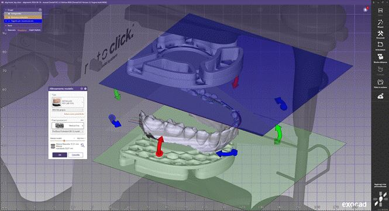
Manuelle Positionierung mit Bonwill-Dreieck als Referenz
Phase 2 — Modellkonstruktion ohne Bauplattform
Während dieses Schritts erzeugt die Software ein Visualisierungsobjekt, das die Position der RotoClick-Verbindungselemente innerhalb des Modells darstellt. Diese Darstellung ermöglicht die Kontrolle der korrekten Ausrichtung sowie die Überprüfung, ob das Modellvolumen mit dem ausgewählten Befestigungssystem kompatibel ist.
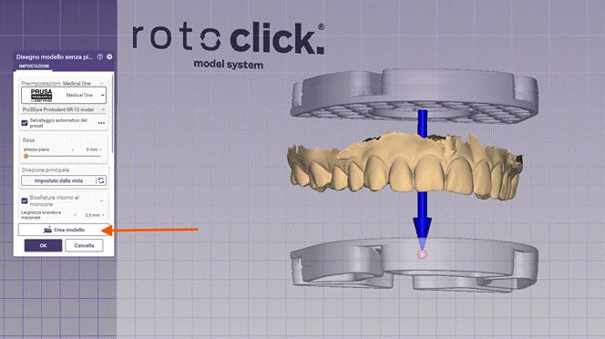
Visualisierungsobjekt der RotoClick-Verbindungselemente

Stützstrukturen in Relation zum Modell
In einigen Fällen kann das Modell gegenüber der RotoClick-Aufnahme dezentriert sein. Ragen die Ränder zu weit über die Basis hinaus, kann dies die Druckstabilität beeinträchtigen. Zur Korrektur stehen der dreidimensionale Manipulator (blauer Pfeil) und der Befehl „Aus Ansicht übernehmen" zur Verfügung.

Korrektur der Modellausrichtung mit dem 3D-Manipulator
Wiederholen Sie den Vorgang für das Antagonistenmodell. Beide Kieferbögen müssen in Bezug auf die RotoClick-Aufnahmen korrekt zentriert sein, um eine präzise und stabile Montage im Artikulator zu gewährleisten.
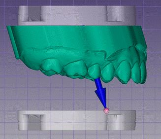
Ausrichtung des Antagonistenmodells

Zentrierte Stützstruktur um den Zahnbogen
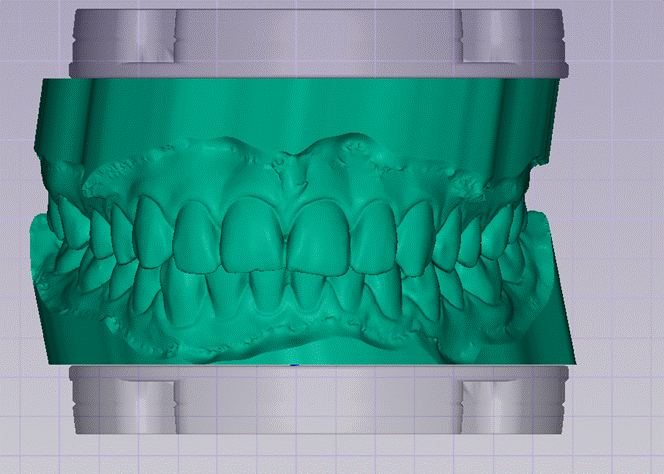
Korrekt zentriertes Modell ohne Überstand
Phase 3 — Modell-Attachments
Die Software lädt automatisch das Standard-Attachment rotoclick_KEY_LAB_PLUS, das für den Druck mit Stützpins empfohlen wird.
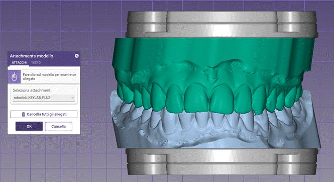
Standard-Attachment rotoclick_KEY_LAB_PLUS
Für den Direktdruck auf der Bauplattform wird empfohlen, das Standard-Attachment durch rotoclick_DRAIN_HOLES zu ersetzen — mit Drainageöffnungen zum Abfluss des Harzes und rückseitigen Fasen, die das Ablösen erleichtern.

Attachment rotoclick_DRAIN_HOLES für den Direktdruck
Im Menü TEXT kann eine dauerhafte Kennzeichnung direkt auf dem Modell hinzugefügt werden. Es wird empfohlen, die in Phase 1 gewählte Konfiguration (z. B. 1U1L, 1U2L, 2U1L, 2U2L oder XL) als Kennzeichnung zu verwenden.
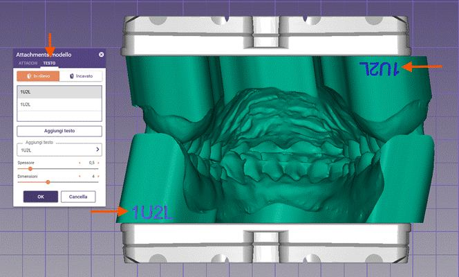
Textkennzeichnung „1U2L" direkt auf dem Modell
Phase 4 — Druckvorbereitung
Bei Verwendung von Druckstützen ist darauf zu achten, dass keine Stützstruktur die Passflächen des RotoClick-Systems beeinträchtigt. Der Umfang der Plattenaufnahme muss vollständig frei bleiben, um eine präzise und wiederholgenaue Verbindung im Artikulator zu gewährleisten.
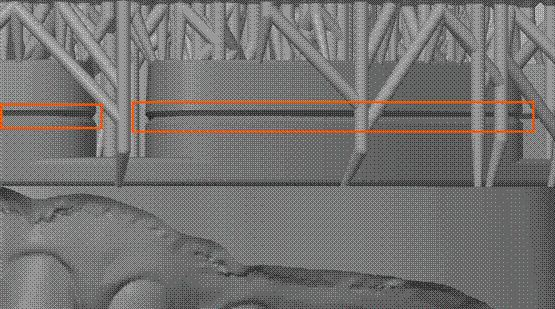
Stützstrukturen dürfen die Passflächen nicht beeinträchtigen
Beim Direktdruck mit dem Attachment rotoclick_DRAIN_HOLES ist sicherzustellen, dass die Basis des Modells vollständig auf der Bauplattform aufliegt und keine unerwünschten Neigungen vorhanden sind.
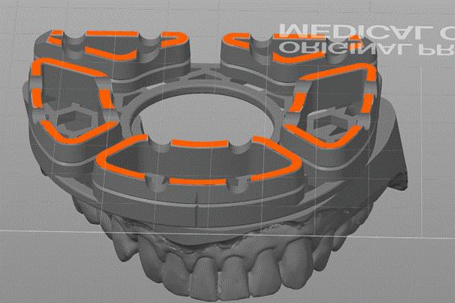
Korrekte Auflage der Modellbasis auf der Bauplattform
Nach Abschluss des Druckvorgangs lösen Sie das Modell mit einem dünnen Spatel von der Bauplattform. Beginnen Sie das Ablösen an den dafür vorgesehenen, abgeschrägten Bereichen, um Beschädigungen der Passflächen zu vermeiden.

Ablösen des Modells an den abgeschrägten Bereichen
Phase 5 — Montage im Artikulator
Nach dem Reinigen und Aushärten der Modelle montieren Sie die weißen Basisplatten und setzen Sie die Modelle anschließend in den Artikulator ein.
► Video: Montage im ArtikulatorRev.1 — 18/06/2026
Key Lab
Trasferimento dei modelli digitali nell'articolatore fisico
Introduzione
RotoClick Key Lab è un sistema per il trasferimento preciso di modelli CAD digitali nell'articolatore fisico, mantenendo la posizione spaziale del mascellare superiore definita nell'articolatore virtuale.
Il sistema, integrato nel flusso di lavoro digitale Exocad, consente la creazione di modelli stampati in 3D con interfacce speciali per un montaggio rapido, preciso e riproducibile nell'articolatore fisico. Grazie alla corrispondenza tra ambiente digitale e articolatore analogico, il tecnico può verificare il lavoro sia virtualmente che meccanicamente.
Fase 1 — Allineamento del modello nel Model Creator
All'interno del Model Creator selezionare il modello RotoClick Key Lab più adatto al caso. Le diverse configurazioni determinano sia l'altezza verticale disponibile tra le arcate sia il tipo di piastre necessarie per il successivo montaggio nell'articolatore.

Selezione del modello nel Model Creator

Panoramica delle configurazioni: 1U1L (46mm), 1U2L (36mm), 2U1L (36mm), 2U2L (26mm)
La selezione deve tenere conto dei seguenti fattori:
- Altezza totale dei dati di scansione
- Presenza di analoghi implantari
- Tipo di modello da produrre
- Spazio necessario per il montaggio nell'articolatore

Allineamento del modello con indicazione delle altezze mascellare/mandibola
La configurazione XL (60 mm) è particolarmente indicata per i casi implantari complessi, dove sono necessari analoghi implantari in entrambe le arcate o spazio verticale aggiuntivo per componenti protesiche.
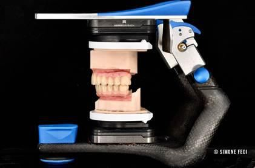
Modello montato nell’articolatore
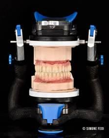
Configurazione XL vista frontale

Menu di selezione del tipo di modello nel Model Creator
Tipo di modello
Le opzioni disponibili consentono la creazione di modelli standard, modelli con monconi estraibili, modelli con analoghi implantari, modelli con fori di drenaggio per la stampa diretta, e modelli con finestre di controllo per verificare il corretto posizionamento degli analoghi implantari.

Panoramica delle opzioni di tipo modello A–G
Posizionamento nell'articolatore
Per mantenere la posizione spaziale definita precedentemente nell'articolatore virtuale, attivare l'opzione "Ripristina l'allineamento ai dati di scansione originali". Questa funzione trasferisce correttamente la posizione determinata nell'articolatore virtuale al sistema Key Lab.

Opzione per il ripristino dell’allineamento originale
Se il progetto non è stato precedentemente articolato nell'articolatore virtuale, i modelli devono essere posizionati manualmente. Utilizzare come riferimento il triangolo di Bonwill e le linee guida visualizzate nella finestra del software.

Posizionamento manuale con il triangolo di Bonwill come riferimento
Fase 2 — Costruzione del modello senza piattaforma
Durante questo passaggio il software genera un oggetto di visualizzazione che mostra la posizione degli elementi di connessione RotoClick all'interno del modello. Questa rappresentazione consente di controllare il corretto allineamento e verificare se il volume del modello è compatibile con il sistema di fissaggio selezionato.

Oggetto di visualizzazione degli elementi di connessione RotoClick
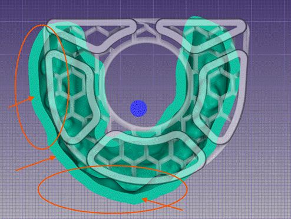
Strutture di supporto in relazione al modello
In alcuni casi il modello può risultare decentrato rispetto all'alloggiamento RotoClick. Se i bordi sporgono troppo oltre la base, questo può compromettere la stabilità di stampa. Per la correzione sono disponibili il manipolatore tridimensionale (freccia blu) e il comando "Recupera dall'orientamento originale".
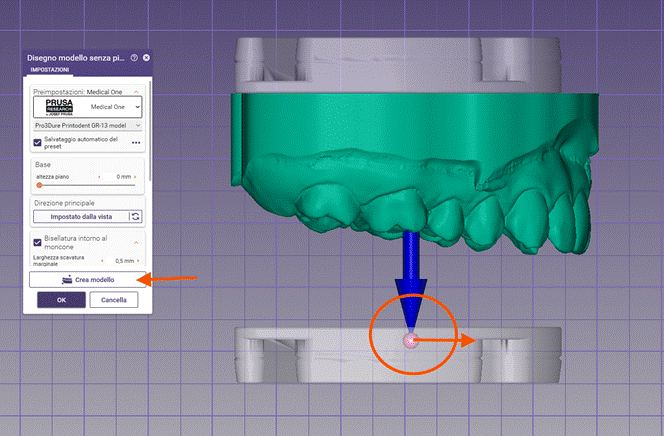
Correzione dell’allineamento del modello con il manipolatore 3D
Ripetere il procedimento per il modello antagonista. Entrambe le arcate devono essere correttamente centrate rispetto agli alloggiamenti RotoClick, per garantire un montaggio preciso e stabile nell'articolatore.

Allineamento del modello antagonista
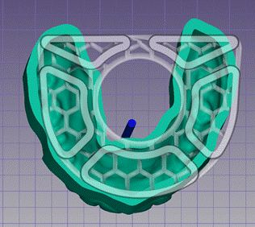
Struttura di supporto centrata attorno all’arcata

Modello correttamente centrato senza sporgenze
Fase 3 — Attachment del modello
Il software carica automaticamente l'attachment standard rotoclick_KEY_LAB_PLUS, consigliato per la stampa con pin di supporto.

Attachment standard rotoclick_KEY_LAB_PLUS
Per la stampa diretta sulla piattaforma di costruzione si consiglia di sostituire l'attachment standard con rotoclick_DRAIN_HOLES — con fori di drenaggio per il deflusso della resina e smussi posteriori che facilitano il distacco.
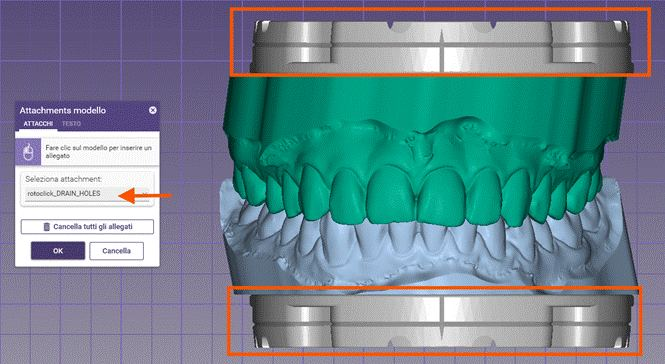
Attachment rotoclick_DRAIN_HOLES per la stampa diretta
Nel menu TESTO è possibile aggiungere una marcatura permanente direttamente sul modello. Si consiglia di utilizzare la configurazione scelta nella Fase 1 (es. 1U1L, 1U2L, 2U1L, 2U2L o XL) come marcatura.

Marcatura testuale "1U2L" direttamente sul modello
Fase 4 — Preparazione alla stampa
In caso di utilizzo di supporti di stampa, è necessario verificare che nessuna struttura di supporto interferisca con le superfici di accoppiamento del sistema RotoClick. Il perimetro dell'alloggiamento della piastra deve rimanere completamente libero, per garantire una connessione precisa e ripetibile nell'articolatore.

Le strutture di supporto non devono interferire con le superfici di accoppiamento
Per la stampa diretta con l'attachment rotoclick_DRAIN_HOLES, verificare che la base del modello sia completamente appoggiata sulla piattaforma di costruzione e che non vi siano inclinazioni indesiderate.

Corretto appoggio della base del modello sulla piattaforma
Al termine della stampa, staccare il modello dalla piattaforma con una spatola sottile. Iniziare il distacco dalle aree smussate previste a tale scopo, per evitare danni alle superfici di accoppiamento.
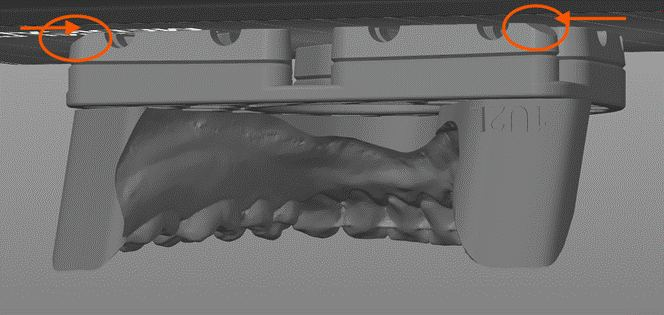
Distacco del modello dalle aree smussate
Fase 5 — Montaggio nell'articolatore
Dopo la pulizia e la polimerizzazione dei modelli, montare le piastre base bianche e inserire i modelli nell'articolatore.
► Video: Montaggio nell'articolatoreRev.1 — 18/06/2026
Key Lab
Transferring digital models into the physical articulator
Introduction
RotoClick Key Lab is a system for the precise transfer of digital CAD models into the physical articulator, while preserving the spatial position of the maxilla previously defined in the virtual articulator.
Integrated into the digital Exocad workflow, the system enables the creation of 3D-printed models with special interfaces for fast, precise, and reproducible mounting in the physical articulator. Thanks to the correspondence between the digital environment and the analog articulator, the technician can verify the work both virtually and mechanically.
Phase 1 — Model alignment in the Model Creator
Within the Model Creator, select the RotoClick Key Lab model best suited to the case. The various configurations determine both the available vertical height between the dental arches and the type of plates required for subsequent mounting in the articulator.
Model selection in the Model Creator

Configuration overview: 1U1L (46mm), 1U2L (36mm), 2U1L (36mm), 2U2L (26mm)
The selection must take the following factors into account:
- Total height of the scan data
- Presence of implant analogs
- Type of model to be produced
- Space required for mounting in the articulator
Model alignment with height indication for maxilla and mandible
The XL configuration (60 mm) is particularly suited to complex implant cases, where implant analogs are required in both arches or extra vertical space is needed for prosthetic components.

Model mounted in the articulator

XL configuration, front view
Model type selection menu in the RotoClick Model Creator
Model type
The available options allow the creation of standard models, models with removable dies, models with implant analogs, models with drainage holes for direct printing, and models with inspection windows to verify correct positioning of the implant analogs.

Overview of model type options A–G
Positioning in the articulator
To preserve the spatial position previously defined in the virtual articulator, enable the "Restore alignment to original scan data" option. This function correctly transfers the position determined in the virtual articulator into the Key Lab system.
Option to restore the original alignment
If the project was not previously articulated in the virtual articulator, the models must be positioned manually. Use the Bonwill triangle and the guide lines displayed in the software window as a reference.

Manual positioning using the Bonwill triangle as a reference
Phase 2 — Model construction without build platform
During this step, the software generates a visualization object showing the position of the RotoClick connection elements within the model. This representation allows you to check the correct alignment of the case and verify whether the model volume is compatible with the selected attachment system.

Visualization object of the RotoClick connection elements

Support structures in relation to the model
In some cases, the model may be off-center relative to the RotoClick mount. If the edges protrude too far over the base, this can compromise print stability. The three-dimensional manipulator (blue arrow) and the "Recover from view" command are available for correction.

Correcting the model alignment with the 3D manipulator
Repeat the procedure for the antagonist model. Both arches must be correctly centered relative to the RotoClick mounts, to ensure a precise and stable mounting in the articulator.

Alignment of the antagonist model

Support structure centered around the dental arch

Correctly centered model without overhang
Phase 3 — Model attachments
The software automatically loads the standard attachment rotoclick_KEY_LAB_PLUS, recommended for printing with support pins.

Standard attachment rotoclick_KEY_LAB_PLUS
For direct printing on the build platform, it is recommended to replace the standard attachment with rotoclick_DRAIN_HOLES — featuring drainage holes for resin runoff and rear chamfers that make removal easier.

Attachment rotoclick_DRAIN_HOLES for direct printing
In the TEXT menu, a permanent marking can be added directly on the model. It is recommended to use the configuration chosen in Phase 1 (e.g. 1U1L, 1U2L, 2U1L, 2U2L or XL) as the marking.

Text marking "1U2L" directly on the model
Phase 4 — Print preparation
When using print supports, make sure that no support structure interferes with the mating surfaces of the RotoClick system. The perimeter of the plate housing must remain completely free, to ensure a precise and repeatable connection in the articulator.

Support structures must not interfere with the mating surfaces
For direct printing with the rotoclick_DRAIN_HOLES attachment, make sure the model's base sits fully flat on the build platform with no unwanted tilt.

Correct seating of the model base on the build platform
After printing is complete, detach the model from the build platform using a thin spatula. Start detaching at the designated chamfered areas to avoid damaging the mating surfaces.

Detaching the model at the chamfered areas
Phase 5 — Mounting in the articulator
After cleaning and curing the models, mount the white base plates and then insert the models into the articulator.
► Video: Mounting in the articulatorRev.1 — 25/06/2026
Kalibrierung
Anpassung an andere Artikulatoren und Genauigkeitskontrolle
Einleitung
Der RotoClick CALIBRATOR ermöglicht die präzise Anpassung des Systems an jeden Artikulator. Die Kalibrierung ist erforderlich wenn die Passgenauigkeit im ARTEX nicht den Anforderungen entspricht, oder wenn ein Nicht-ARTEX-Artikulator verwendet wird.
Das Prinzip beruht auf dem physischen Eingipsen der RotoClick-Konterplatten direkt gegen den Artikulator — nicht auf einer Softwareanpassung. Dieser Prozess kompensiert gleichzeitig alle laboreigenen Variablen (Harz, Drucker, Parameter) einmalig und dauerhaft.
► Video: RotoClick auf jedem ArtikulatorKalibrierkörper herstellen
Datei Rotoclick CALIBRATOR.rar herunterladen, entpacken und mit denselben Druckparametern wie reguläre RotoClick-Modelle drucken. Jeder Kalibrierkörper besteht aus einem Oberkiefer- und einem Unterkieferteil.

OK-Teil des Kalibrierkörpers (3D-Ansicht)

UK-Teil des Kalibrierkörpers (3D-Ansicht)

OK- und UK-Teil zusammengesetzt
ARTEX-Artikulator
Nur die UK-Position kalibrieren (OK-Position: Verklebeteil aus dem Set verwenden). Kalibrierteile auf 3D-Basisplatten montieren, OK-Teil auf Key-Lab Adapter. UK-Teil mit schwarzer Konterplatte über 3 Zentrierpins ausrichten und mit Artikulationsgips gegen die Splitcast-Konterplatte fixieren. Aushärten abwarten.
Wiederholen für: 1U1L / 2U1L / 1U2L / 2U2L / XL
Nicht-ARTEX-Artikulator
Beide Kalibrierkörperteile (OK + UK) mit 3D-Basisplatten und Konterplatten bestücken und den Kalibrierkörper in den Artikulator einsetzen — genau so wie zwei gewöhnliche Dentalmodelle.
Kalibrierkörper 2U2L eingesetzt im Artikulator, vor dem Eingipsen
Zuerst den UK-Teil eingipsen — symmetrisch zentriert auf Höhe des Bonwillschen Dreiecks. Aushärten abwarten. Dann OK-Teil über die 3 Zentrierpins ausrichten und ebenfalls eingipsen.
UK-Teil nach dem Eingipsen — kalibriert und dauerhaft fixiert
Kalibrierkörper entnehmen — die Konterplatten verbleiben dauerhaft am Artikulator und definieren den kalibrierten Aufnahmeraum.
Durch diese Methode wird vollständige Kompatibilität zwischen ARTEX- und Nicht-ARTEX-Artikulatoren im selben Labor erreicht.
→ Zubehör & Downloads
Rev.1 — 25/06/2026
Calibrazione
Adattamento ad altri articolatori e controllo della precisione
Introduzione
Il RotoClick CALIBRATOR consente di adattare con precisione il sistema a qualsiasi articolatore. La calibrazione è necessaria quando la precisione nell'ARTEX non soddisfa i requisiti, o quando si utilizza un articolatore non-ARTEX.
Il principio si basa sul fissaggio fisico con gesso delle controplacche direttamente contro l'articolatore — non su una modifica del software. Questo processo compensa simultaneamente tutte le variabili del laboratorio (resina, stampante, parametri) in modo definitivo e permanente.
► Video: RotoClick su qualsiasi articolatoreProduzione del corpo di calibrazione
Scaricare il file Rotoclick CALIBRATOR.rar, estrarre e stampare con gli stessi parametri dei modelli regolari. Ogni corpo è composto da una parte mascellare e una mandibolare.
Parte mascellare del corpo di calibrazione (vista 3D)
Parte mandibolare del corpo di calibrazione (vista 3D)

Parte mascellare e mandibolare assemblate
Articolatore ARTEX
Calibrare solo la posizione mandibolare (mascellare: usare il pezzo adesivo incluso nel set). Montare le parti di calibrazione sulle basi 3D, la parte mascellare sull'adattatore Key Lab. Allineare la parte mandibolare con la controplacca nera tramite i 3 pin di centraggio e fissare con gesso contro la controplacca Splitcast. Attendere l'indurimento.
Ripetere per: 1U1L / 2U1L / 1U2L / 2U2L / XL
Articolatore non-ARTEX
Montare su entrambe le parti le basi 3D e le controplacche RotoClick e inserire il corpo di calibrazione nell'articolatore — esattamente come due normali modelli dentali.

Corpo di calibrazione 2U2L inserito nell'articolatore, prima del gesso
Fissare prima la parte mandibolare con gesso — centrata simmetricamente all'altezza del triangolo di Bonwill. Attendere l'indurimento. Allineare poi la parte mascellare tramite i 3 pin e fissare anch'essa.

Parte mandibolare dopo il fissaggio con gesso — calibrata e fissata permanentemente
Rimuovere il corpo di calibrazione — le controplacche rimangono fissate permanentemente all'articolatore e definiscono lo spazio di alloggiamento calibrato.
Questo metodo garantisce piena compatibilità tra articolatori ARTEX e non-ARTEX nello stesso laboratorio.
→ Accessori & Download
Rev.1 — 25/06/2026
Calibration
Adapting to other articulators and accuracy control
Introduction
The RotoClick CALIBRATOR enables precise adaptation of the system to any articulator. Calibration is required when the fit accuracy in the ARTEX no longer meets requirements, or when a non-ARTEX articulator is used.
The principle is based on physically plastering the RotoClick counter-plates directly against the articulator — not on a software adjustment. This process simultaneously compensates, once and permanently, for all lab-specific variables (resin, printer, parameters).
► Video: RotoClick on any articulatorProducing the calibration body
Download the file Rotoclick CALIBRATOR.rar, extract it, and print with the same parameters as your regular RotoClick models. Each calibration body consists of a maxillary and a mandibular part.

Maxillary part of the calibration body (3D view)

Mandibular part of the calibration body (3D view)
Maxillary and mandibular parts assembled
ARTEX articulator
Only the mandibular position needs to be calibrated (for the maxillary position, use the bonded piece included in the set). Mount the calibration parts on the 3D base plates, the maxillary part on the Key Lab adapter. Align the mandibular part with the black counter-plate using the 3 centering pins, and fix with articulation plaster against the Splitcast counter-plate. Wait for it to fully set.
Repeat for the desired combinations: 1U1L / 2U1L / 1U2L / 2U2L / XL
Non-ARTEX articulator
Fit both parts of the calibration body with the 3D base plates and RotoClick counter-plates, and insert the calibration body into the articulator — exactly as you would with two ordinary dental models.

2U2L calibration body inserted in the articulator, before plastering
Plaster the mandibular part first — symmetrically centered at the height of the Bonwill triangle. Wait for it to fully set. Then align the maxillary part via the 3 centering pins and plaster it as well.

Mandibular part after plastering — calibrated and permanently fixed
Remove the calibration body — the counter-plates remain permanently attached to the articulator and define the calibrated seating space.
This method achieves full compatibility between ARTEX and non-ARTEX articulators within the same laboratory.
→ Accessories & Downloads
Zubehör
Zubehör & Downloads
Alle Dateien zum Herunterladen
Exocad Bibliotheken
↓ library_V6.zipKalibrierung
↓ Rotoclick CALIBRATOR.rarExtractor
↓ extractor_v2.stlAccessori
Accessori & Download
Tutti i file disponibili per il download
Librerie Exocad
↓ library_V6.zipCalibrazione
↓ Rotoclick CALIBRATOR.rarEstrattore
↓ extractor_v2.stlAccessories
Accessories & Downloads
All files available for download